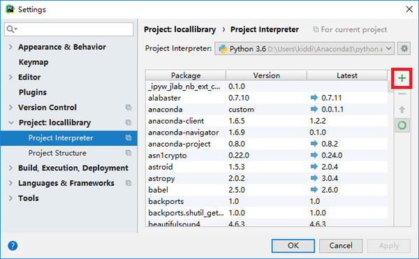
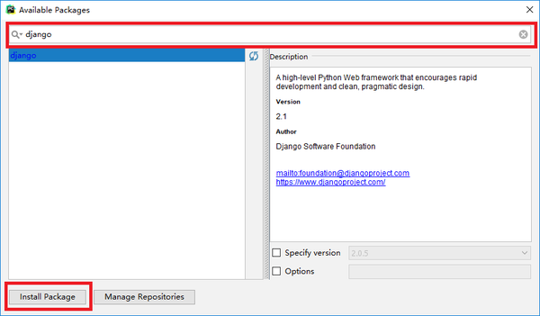
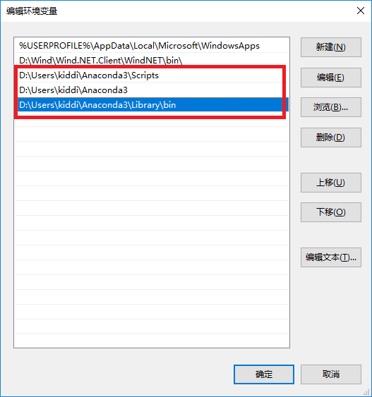
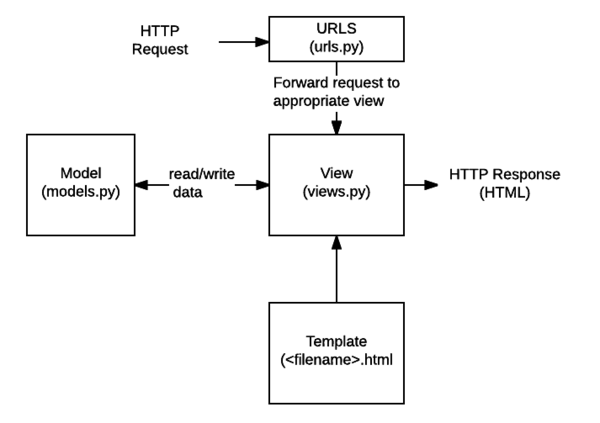
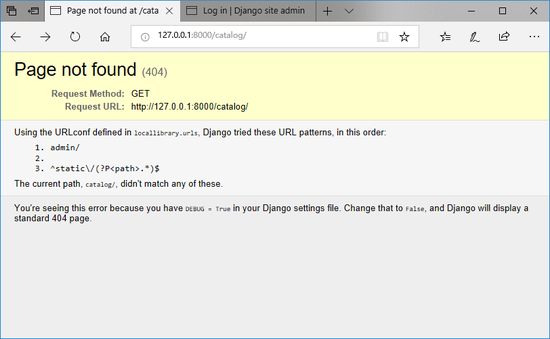
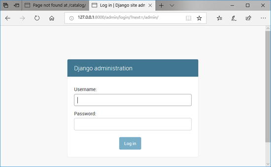

Django安装与使用
一、Django简介
Django是一个开源的web开发框架，该框架使用的是python语言。其集成了所有web开发需要的组件，开发测试速度极快，所以又被称为all-in-one类型的web开发框架。此外，Django还有Secure、Scalable、Maintainable等特性。Django于2017年发布2.0版本。
这里列出了很多Django的特点/优点；
Django早在2003-2005年间被一个新闻网站的开发团队开发出来，于2005年7月开源，并命名为Django；可以推测出，Django在做文本型的网站开发上是有优势的，比如：博客、图书馆等。
二、Django安装
Step1.安装python
安装python会涉及版本的选择问题，这里我选择的是python3，因为python2和python3的语法略有不同，python3没有做向下兼容，而python2又将不再被官方更新维护了，所以对于我这种新手还是学学python3吧^_^。
python的官方网站提供了多种平台和版本的下载
对于python3的安装，我选择的是anaconda，anaconda是一个开源的python发行版，里面包含很多常用模块，安装这个省去了后续很多模块安装的麻烦；当然，如果想多了解python也可以使用python安装包进行安装。
anaconda安装过程1
2
3wget http://repo.continuum.io/archive/Anaconda3-5.2.0-Linux-x86_64.sh #在官网下载可以下3.6的版本（2018.08.30）
sh Anaconda3-5.2.0-Linux-x86_64.sh #sh可以改为bash，安装的最后会让你选择安装微软的一款IDE产品，可以选择no
source ~/.bashrc #刷新一下环境变量
输入命令测试一下，出现Anaconda，Inc，成功1
2
3
4
5zhuz@qwerty:~$ python3
Python 3.6.5 |Anaconda, Inc.| (default, Apr 29 2018, 16:14:56)
[GCC 7.2.0] on linux
Type "help", "copyright", "credits" or "license" for more information.
>>>
windows下安装相对简单，不再赘述。
注意
1.anaconda自带了Jupyter和Spyder，前者是notebook，后者是IDE，都挺好用的；
2.Linux自带了python，如果自带的是python2.7，也可以考虑安装一个python3或者anaconda，但是需要解决一下版本管理问题；
3.windows系统下，需要在安装好python后添加路径至环境变量，这样就可以在命令行内使用了
Step2.安装Django模块
- 2.1.使用pip或conda安装
pip和conda安装方法是一样的1
2pip install django #pip是python的安装包管理工具,类似于yum和Centos的关系
conda install django #conda是anaconda的安装包管理工具
如果使用pip3安装的时候提示pip3版本过低，需要先更新pip3的版本1
pip3 install --upgrade pip #注意不是pip3 install --upgrade pip3
- 2.2.使用pycharm安装
pycharm是一款IDE，由捷克公司JetBrains开发，也是python的主流IDE，其内置了很多功能，使用方便。打开pycharm，依次点击file->settings，出现如下界面，点击+号按钮，搜索框输入django，选中出现的模块包，右侧便会出现相应的模块信息，接下来点击Install Package即可，如下图所示:


注意
1.windows系统下，需要在安装好Django后添加环境变量
2.如果使用的是pycharm安装Django，则需要另外添加anaconda/pkgs/django-2.0.5-py36hd476221_0/Scripts到环境变量，这样比较麻烦，不如用conda来安装；
3.conda只能安装python的官方包
- 2.3.添加环境变量
Linux下已经自动添加了环境变量；windows10下添加环境变量的方法此电脑->右键属性->高级系统设置->高级->环境变量->用户变量中双击Path->新建如下图所示：

图中红色矩形框即为Anaconda在本机上的路径，这里需要添加上面的3个路径
三、Django实践
这里使用Django创建一个简单的web项目，一方面是学习一下Django的框架，另一方面测试一下Django是否可用。
框架理论
Django框架是MTV模式（model+template+view），和MVC的模式基本一样，可以参考阮一峰的博客学习一下
下面直接看图：

图中显示了HTTP Request到HTTP Response的过程，首先通过URLS来找到View的路径，而View是由Template（比如一个html模板）+data合并得到的，data是由Model得来（所以Model是用来操作数据库的）。具体说来，Django分为几大块（摘自书签1）：
- URLs: While it is possible to process requests from every single URL via a single function, it is much more maintainable to write a separate view function to handle each resource. A URL mapper is used to redirect HTTP requests to the appropriate view based on the request URL. The URL mapper can also match particular patterns of strings or digits that appear in an URL, and pass these to a view function as data.
- View: A view is a request handler function, which receives HTTP requests and returns HTTP responses. Views access the data needed to satisfy requests via models, and delegate the formatting of the response to templates.
- Models: Models are Python objects that define the structure of an application’s data, and provide mechanisms to manage (add, modify, delete) and query records in the database.
- Templates: A template is a text file defining the structure or layout of a file (such as an HTML page), with placeholders used to represent actual content. A view can dynamically create an HTML page using an HTML template, populating it with data from a model. A template can be used to define the structure of any type of file; it doesn’t have to be HTML!
项目测试
pycharm新建一个项目：
依次点击file->New Project->Django->Location(命名)->Create即可
命令行新建一个项目：1
2python3 -m django --version #先看一下版本
django-admin startproject mysite #创建一个名为mysite的项目
看一下项目的目录：1
2
3
4
5
6
7
8
9
10
11zhuz@qwerty:~/Just_test$ tree mysite/
mysite/
├── manage.py
└── mysite
├── __init__.py
├── settings.py
├── urls.py
└── wsgi.py
1 directory, 5 files
zhuz@qwerty:~/Just_test$
创建一个app1
python3 manage.py startapp catalog
看一下app的目录1
2
3
4
5
6
7
8
9
10
11
12zhuz@qwerty:~/Just_test/mysite$ tree catalog/
catalog/
├── admin.py
├── apps.py
├── __init__.py
├── migrations
│ └── __init__.py
├── models.py
├── tests.py
└── views.py
1 directory, 7 files
项目 V.S. 应用
应用（app）是一个专门做某件事的网络应用程序——比如博客系统，或者公共记录的数据库，或者简单的投票程序。
项目（project）则是一个网站使用的配置和应用的集合。
项目可以包含很多个应用；应用可以被很多个项目使用。
在/mysite/mysite/setting.py文件内“注册”一下刚刚创建的app，写入app的Config路径：1
2
3
4
5
6
7
8
9INSTALLED_APPS = [
'polls.apps.PollsConfig',
'django.contrib.admin',
'django.contrib.auth',
'django.contrib.contenttypes',
'django.contrib.sessions',
'django.contrib.messages',
'catalog.apps.CatalogConfig', #CatalogConfig在catalog下的apps.py文件内，这个文件下app的名字已经写好了
]
看到setting.py中的DATABASES默认使用的是sqlite3，这里就不用改了；需要改的是时区，还是在setting.py文件内，找到TIME_ZONE修改：1
TIME_ZONE = 'Asia/Shanghai'
接下来写一下URL映射，我们将project中的url导向app自己的url，打开mysite/mysite/urls.py写入url的相对路径：1
2
3
4
5
6from django.urls import path, include #默认没有添加include
urlpatterns = [
path('admin/', admin.site.urls), #原本自带的信息
path('catalog/', include('catalog.urls')), #app的相对路径
path('', RedirectView.as_view(url='/catalog/', permanent=True)),
] + static(settings.STATIC_URL, document_root=settings.STATIC_ROOT)
这样一来，我们就需要在catalog这个app下新建一个urls.py文件1
2
3
4
5
6
7from django.urls import path
from catalog import views #导入的这两个包以后会用到的
urlpatterns = [
]
OK啦，接下来可以测试运行一下了1
2python3 manage.py makemigrations
python3 manage.py migrate
migrate：
迁移是非常强大的功能，它能让你在开发过程中持续的改变数据库结构而不需要重新删除和创建表 - 它专注于使数据库平滑升级而不会丢失数据。
运行1
python3 manage.py runserver
接下来就可以访问http://127.0.0.1:8000/了，注意Chrome浏览器使用时，需要先检查一下代理，有些同学在翻墙的时候将代理端口改了一下导致不能连接…


生产环境下web搭建一般会需要
LEMP(LNMP)或者LAMP环境，即由Nginx或者Apache作为前端提供http服务，mysql提供数据库服务；但Django自带了一个轻量级的webserver进行开发调试，如需调整为生产环境，可以调换自带的webserver
四、总结
- 1.Django是一个python的web开发框架，因此需要先搭建好python环境；
- 2.可以使用Anaconda安装python环境，需要修改一下系统的环境变量；
- 3.windows下使用pycharm添加的Django包需要单独添加环境变量，所以不建议这样安装；
- 4.Django自带轻量级webserver，所以无需其他组件即可搭建web app；